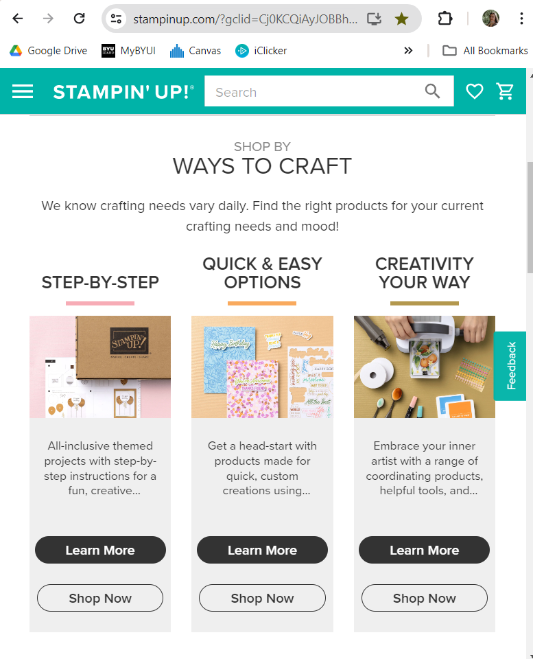
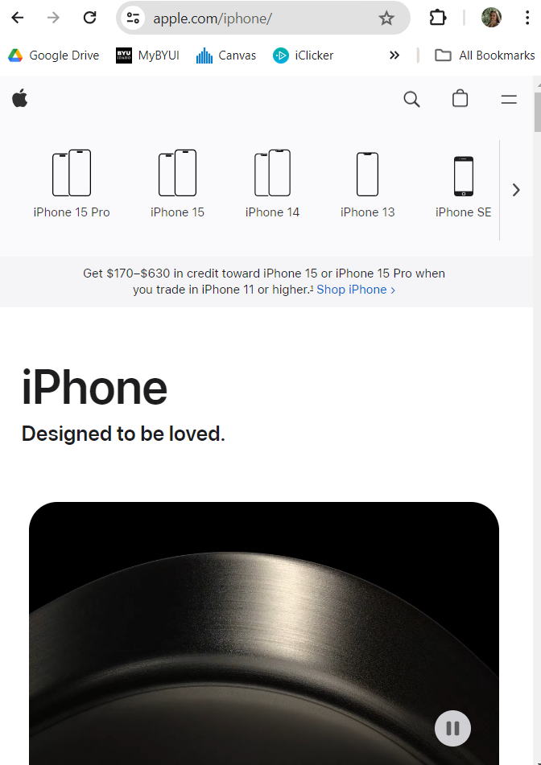
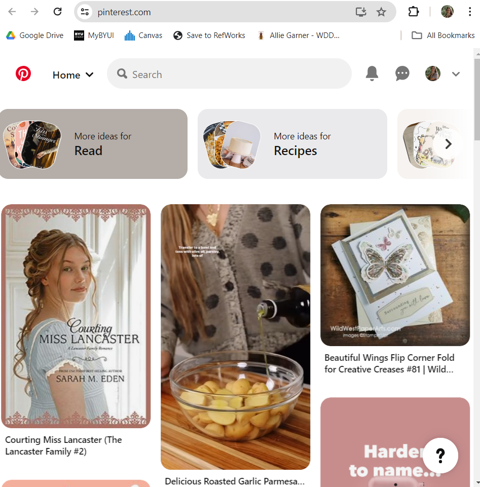

Website 1

This website uses the design principle of White Space and Clean Design. Throughout the page, they have professional photos of their products with buttons and links to let the user learn more or shop for the desired product. This site uses white space to help thier organization be more pleasant to view.
Website 2

This website uses the design principle of PARC: Contrast. The image above shows a dark image with the webpage having a white background. Apple keeps to a very simple and high in contrast color pallet.
Website 3

Pinterest's website uses the design principle of Visual Hierarchy. They make the pins as the larger items on the site. They make sure that their algarithm shows the viewer what they want to see instead of showing more words and details. Users can click on the pins to access more of the hidden details.